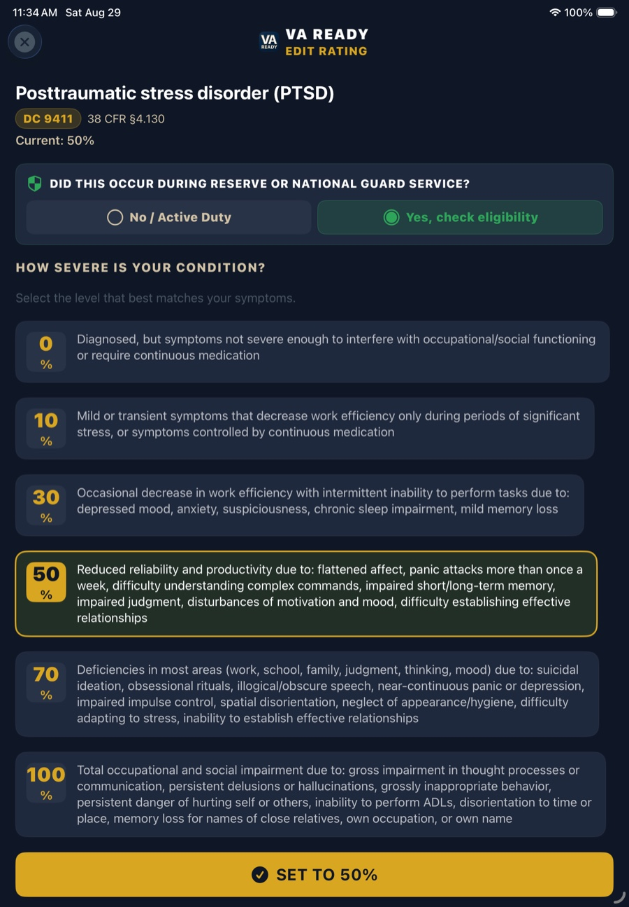
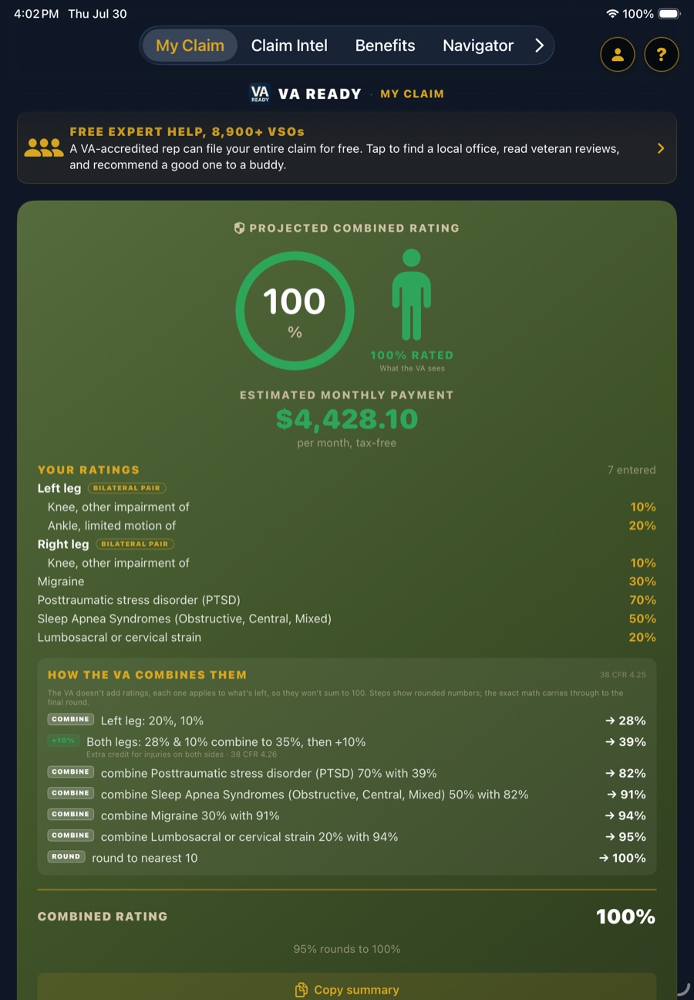

The part most calculators skip: the criteria
Any calculator can combine percentages. The number is the easy half. The half that decides your claim is why a condition is rated 30 and not 50, and that lives in the rating criteria of 38 CFR Part 4, written break point by break point.
VA Ready carries those criteria for all 762 conditions in the schedule. You pick the level that matches your symptoms, in the VA's own words, instead of guessing at a percentage and hoping.


See the criteria for the most-claimed conditions
Each page below lists the full rating criteria for that condition, break point by break point, with its diagnostic code and the CFR section it comes from. Free to read, no account.
Browse all condition guides → · The app carries the full schedule, all 762 diagnostic codes, each with its criteria.
Then hand your VSO a packet, not a story
Knowing your criteria only helps if the person filing your claim can see it. Most veterans walk into a VSO appointment and try to remember eight years of history out loud. VA Ready builds the packet instead, and you choose what goes in it:
- Conditions and ratings, each with its diagnostic code, the criteria level you selected, and where your evidence stands
- Presumptives from your exposures, matched from the bases and aircraft you actually served on
- Symptom log summary, the dated frequency-and-severity record a C&P examiner is looking for
- Exam Questionnaire answers, in your own words, written before you are put on the spot
- Journal timeline, with any evidence you have gathered but not yet sent flagged
It prints with your full service history on the cover, each period of service listed separately with its branch and component, because a rep cannot apply 38 CFR 3.6 to Active, Reserve and Guard time if they are collapsed into one date range.
The packet builder is part of Pro. The calculator, the criteria and the condition guides are free, always.
How VA combined ratings work
Most veterans assume the VA adds their ratings. It does not. Under 38 CFR 4.25, the VA combines them. Each condition counts against the healthy percentage you have left, and the total is rounded to the nearest 10 percent.
That rounding is why one more condition sometimes changes nothing, while the right condition pushes you past the next 10 percent line. The calculator above runs this exact math.
Already know what rating you expect? Estimate your VA back pay → to see what the VA may owe you for the months between your effective date and your decision.
Want the full picture? Get the app.
This page does one thing: it combines ratings you already have. VA Ready does the rest.

- Rates every condition for you, condition by condition, with the real 38 CFR criteria for 762 conditions
- Finds what you can claim from your bases and your job, duty station by duty station: PACT Act, Camp Lejeune, Agent Orange, AFFF
- Flags secondary conditions, pyramiding traps, and the bilateral splits that move your rating
- Links peer-reviewed research to your conditions, then builds the VSO packet described above
Condition by condition. Duty station by duty station. Download VA Ready free, and with Pro, export the VSO-ready Claim Summary and Exposure Profile PDFs you bring to file.
Common questions
Why isn't my combined rating just the sum of my conditions?
The VA uses a combined-ratings table (38 CFR 4.25), not addition. Each condition applies to your remaining non-disabled percentage, so 50% and 30% combine to 65%, not 80%. The final value is rounded to the nearest 10%.
What is the bilateral factor?
When disabilities affect both arms, both legs, or paired skeletal muscles, the VA combines those bilateral conditions and adds an extra 10% of that value before combining with the rest. Check "both sides" on a condition above to apply it.
Does this include dependents?
Yes. At 30% and above, the VA adds pay for a spouse and children. This tool uses the 2026 rate tables. At 10% and 20%, pay is a flat rate regardless of dependents. Additional pay for parents, aid & attendance, and SMC is handled in the app.
How accurate is this?
The combined-rating math follows 38 CFR 4.25 exactly, and the pay figures use the published 2026 rates. It's an estimate. Your actual award depends on the VA's decision, your effective date, and factors like SMC.
How do I know what rating percentage my condition qualifies for?
Every condition in 38 CFR Part 4 has written criteria at each percentage, called break points. A rating is assigned by matching your documented symptoms to the criteria for that level, not by estimating a number. PTSD under 38 CFR 4.130, for example, has break points at 0, 10, 30, 50, 70 and 100 percent, each with its own description of occupational and social impairment. VA Ready carries these criteria for all 762 conditions so you can read the exact language for each level.
What are VA rating break points?
A break point is a specific percentage level in the rating schedule that has its own written criteria. Conditions do not scale smoothly, they jump between defined levels. Knowing where the break points fall for your condition tells you what evidence would support the next level, which is the difference between guessing at a rating and documenting one.
Why is it so hard to go from 80 percent to 100 percent?
Because of how 38 CFR 4.25 combines ratings. At 80 percent you have 20 percent of healthy value left, so a new 30 percent condition adds only 30 percent of that remaining 20, which is 6 points. You reach 86, which rounds to 90. Getting to 100 schedular usually takes either one high rating or several substantial ones, which is also why TDIU exists for veterans who cannot work but do not reach 100 on the schedule.
Can a VA disability calculator tell me what rating I will get?
No, and be careful with any tool that claims it can. A calculator can combine ratings you already have and show you the published criteria for each level. Your actual rating depends on your medical evidence, your C&P exam, and how the rater applies the criteria to your file. The useful question is not "what will I get," it is "which criteria do my documented symptoms actually meet."